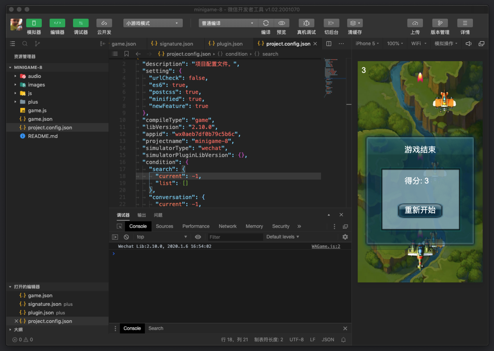

# 概览
为了帮助开发者简单和高效地开发和调试微信小程序，我们在原有的公众号网页调试工具的基础上，推出了全新的 微信开发者工具，集成了公众号网页调试和小程序调试两种开发模式。
- 使用公众号网页调试，开发者可以调试微信网页授权和微信JS-SDK 详情
- 使用小程序调试，开发者可以完成小程序的 API 和页面的开发调试、代码查看和编辑、小程序预览和发布等功能。
为了更好的开发体验，我们从视觉、交互、性能等方面对开发者工具进行升级，推出了 1.0 版本 下载。使用过程中若有问题或建议，可前往 #微信开发者工具社区 发帖反馈交流。
